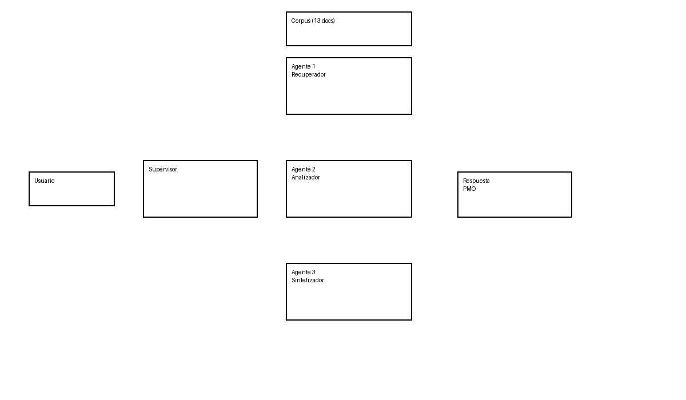

Agente 1
Recupera evidencia mediante RAG, embeddings y FAISS.
TFM · LLMs · RAG · Sistemas multiagente
Prueba de concepto orientada a PMO, consultoras tecnológicas y gestión documental.
Ver repositorio en GitHubLas organizaciones gestionan documentación dispersa: actas, riesgos, incidencias, presupuestos, facturas y correos de proveedores. Revisar manualmente esta información consume tiempo y puede generar omisiones.
El prototipo usa una arquitectura multiagente implementada en Flowise. Un supervisor coordina tres agentes especializados: recuperador documental, analizador de evidencia y sintetizador de respuesta ejecutiva.

Recupera evidencia mediante RAG, embeddings y FAISS.
Analiza la evidencia y detecta riesgos, impacto y suficiencia.
Redacta una respuesta ejecutiva orientada a PMO.
Orquesta el flujo entre agentes y evita respuestas sin evidencia.
La solución puede adaptarse a pequeñas consultoras, oficinas de dirección de proyectos, auditoría interna y departamentos de gestión documental.